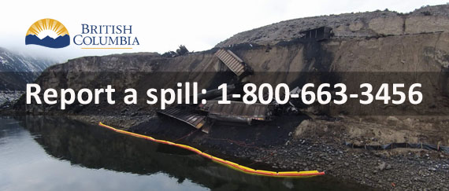

Report a spill

When a spill or the risk of a spill occurs, report it immediately by calling 1-800-663-3456.
This is known as the Initial Report or Dangerous Goods Incident Report (DGIR).
The Initial Report must be completed by the responsible person (spiller) if:
- The quantity of the spill is equal to or greater than the quantity outlined in the schedule of the Spill Reporting Regulation for a specific substance
- The spill has impacted, or might impact, a body of water
Additional information on spill reporting requirements is available in the Spill Reporting Regulation (PDF, 79KB) of the Environmental Management Act.
On this page
Water sheens
Sheens can be caused by petroleum products in the water, or they can occur naturally.
Before you report a spill, learn more about water sheens:
- Are you looking at a sheen caused by a spill?
- Is your sheen naturally occurring?
Here's how to tell the difference between naturally occurring sheens and those caused by pollution:
Initial Report
When reporting a spill, the following information must be provided to the dispatcher:
- The contact information for the individual making the report, the responsible person in relation to the spill and the owner of the substance spilled
- The date and time of the spill
- The location of the spill site
- A description of the spill site and the surrounding area
- A description of the source of the spill
- The type and quantity of the substance spilled
- A description of the circumstances, cause and adverse effects of the spill
- Details of any action taken or proposed to comply with Section 91.2 (2) of the Environmental Management Act
- Names of any provincial, federal, local and/or First Nations government agencies at the spill site
- The names of any other persons or government agencies advised about the spill
Update to Minister Report
As of October 30, 2018, the Update to Minister Report is required and must be completed by the responsible person in relation to a spill with the information outlined in Section 5 of the Spill Reporting Regulation.
This report is required if any of the following 3 conditions are present:
- As soon as possible at the request of the minister
- At least once every 30 days after the date that the spill began until such time that the End-of-Spill Report is required
- At any time the responsible person has reason to believe that information previously reported as part of the Initial Report was or has become inaccurate
End of Spill Report
As of October 30, 2018, the End-of-Spill Report is required and must be completed by the responsible person in relation to a spill with the information outlined in Section 6 of the Spill Reporting Regulation.
This report is required if:
- The quantity spilled, or likely to spill, is equal to or greater than the quantity outlined in the Spill Reporting Regulation for a specific substance
- The spill impacted, or was likely to impact, a body of water
If a spill meets the requirements for this report, the responsible person must complete the Update to Minister/End-of-Spill Report using the template provided on this page.
Once completed, submit the report by email stating the DGIR number with ‘End-of-Spill Report’ in the subject line.
If required, this report must be submitted within 30 days of the emergency response completion date of the spill as defined in Section 8 of the Spill Reporting Regulation.
Lessons-learned Report
A director may order a responsible person to submit a Lessons-Learned Report in relation to a spill incident as outlined in Section 7 of the Spill Reporting Regulation. This should occur within 6 months of the emergency response completion date outlined in Section 8 of the Spill Reporting Regulation.
If someone is ordered to submit a Lessons-Learned Report, they'll receive the order via registered mail with instructions on how to complete and submit the report.